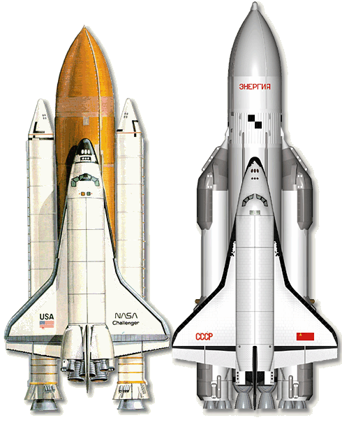
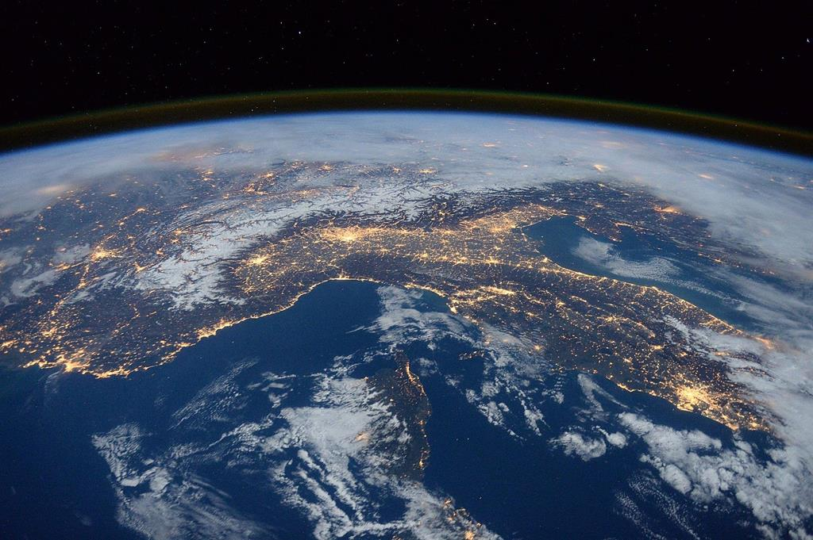

|
Na tej stronie poznasz wspaniałą opowieść o rozwoju ludzkości i przełomach technologicznych, które towarzyszą światu już prawie 100 lat.
Czytając nasze artykuły poznasz ciekawostki
i wiedzę, jakiej nie znajdziesz nigdzie indziej!
Loty kosmiczne to fascynująca dziedzina nauki i technologii, która przyniosła ludzkości niesamowite osiągnięcia i... kilka dziwnych ciekawostek! Oto kilka z nich:

- Pieskie początki: Zanim człowiek poleciał w kosmos, pierwszym pasażerem, który opuścił Ziemię, była... Laika, pies z Moskwy. W 1957 roku Związek Radziecki wysłał Laikę w kapsule Sputnik 2, ale niestety podróż była tylko w jedną stronę. Na szczęście, późniejsze misje kosmiczne z udziałem zwierząt były znacznie bardziej udane.
- Kosmiczne cappuccino: Na Międzynarodowej Stacji Kosmicznej (ISS) astronauci mogą cieszyć się prawdziwą włoską kawą! Dzięki specjalnie zaprojektowanemu ISSpresso, astronauci mogą pić espresso w kosmosie. Oczywiście, filiżanek tam nie znajdziecie wszystko odbywa się w specjalnych, hermetycznie zamkniętych torebkach.
- Czy w kosmosie można płakać?: Astronauci, owszem, mogą płakać w kosmosie, ale łzy nie spłyną po ich policzkach. Ze względu na brak grawitacji, łzy tworzą kulki wody, które unoszą się na powierzchni oka. W kosmosie musisz naprawdę uważać na swoje emocje i łzy!
|